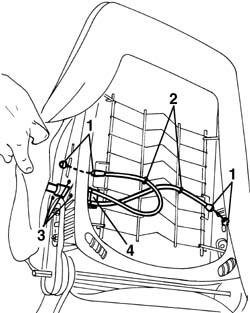

7045a38 device for driver`s seat squab lumbar adjustment - r r with seat removed
- Path
- Procedures > 70 FITTINGS > 7045 FRONT SEATS > 7045A front seat assembly > 7045a38 device for driver`s seat squab lumbar adjustment - r r with seat removed
- Kind
- repair procedure (removal / refitting; the operation number is the code)
- Applies to
- all engines; all production periods
- Interactive page
- https://sloeber94.github.io/elrnDB-a156/en/#/3238870
Applies to: all engines; all production periods
Carry out op. 7045B10 l/h or r/h front seat head restraint - r+r
Carry out op. 7045A25 squab lumbar knob - r r
Carry out op. 7045A24 squab knob - r r
Carry out op. 7045A43
Carry out op. 7045A44 seat interior guard - r r
Carry out op. 7045A20 SQUAB COMPLETE with a front seat with air-bag, height adjustment and lumbar adjustment, left or right - R.R.
1. Move the upholster and disconnect the ends of the adjustment cables.
2. Disconnect the cable retaining bands.
3. Drill out the rivets.
4. Remove the device.

Applies to: all engines; all production periods
Check that the device is not damaged and restore its operation.
Refit the device.
Fit the rivets.
Secure the cable using the retaining bands.
Move the upholstery and connect the ends of the adjustment cables.
Complete op. 7045A20 SQUAB COMPLETE with a front seat with air-bag, height adjustment and lumbar adjustment, left or right - R.R.
Complete op. 7045A44 seat interior guard - r r
Complete op. 7045A43
Complete op. 7045A24 squab knob - r r
Complete op. 7045A25 squab lumbar knob - r r
Complete op. 7045A10 l/h or r/h front seat (one) - r+r
Test the device is working properly.
Topics linked from this page (7)
- 7045A10 l/h or r/h front seat (one) - r+r
- 7045A20 SQUAB COMPLETE with a front seat with air-bag, height adjustment and lumbar adjustment, left or right - R.R.
- 7045A24 squab knob - r r
- 7045A25 squab lumbar knob - r r
- 7045a43 seat exterior guard - r r
- 7045A44 seat interior guard - r r
- 7045B10 l/h or r/h front seat head restraint - r+r